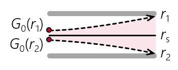

PMA TRANSFER
FUNCTION
EVALUATOR

This viz examines the transfer function of particle mass analyzers like the centrifugal particle mass analyer (CPMA) or aerosol particle mass analyzer (APM). We refer the reader to Sipkens et al. (2020) for more information on the underlying analytical functions. A supporting repository, including Python code for evaluating the PMA transfer function is available here. A Matlab version is also available here. The default view shows contributions from integer charge states z = 1 through 3.
APM (aerosol particle mass analyzer) conditions are achieved when ω2/ω1 = 1, e.g., this point.
Typcialy CPMA (centrifugal particle mass analyzer) conditions are achieved when ω2/ω1 = 0.9696, e.g., this point.
We note that Case 1S, following from the approach proposed
Ehara et al. (1996), results in various anomalies. In the default view, there is an anomaly for the z = 1 transfer function that is a consequence of solving for the equilibrium raidus, which appears as a linear increase in the transfer function for m/m* > 2 and demonstrates a limitation of that approach. Other anomalies include problems with calculating the uncharged (z = 0) contributions. The method is generally stable for the ω2/ω1 = 1, the case originally intended by Ehara et al. (1996).